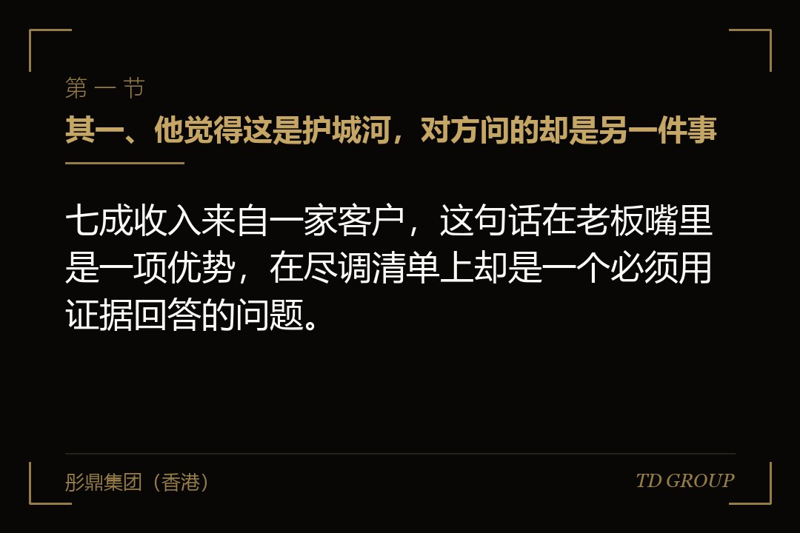
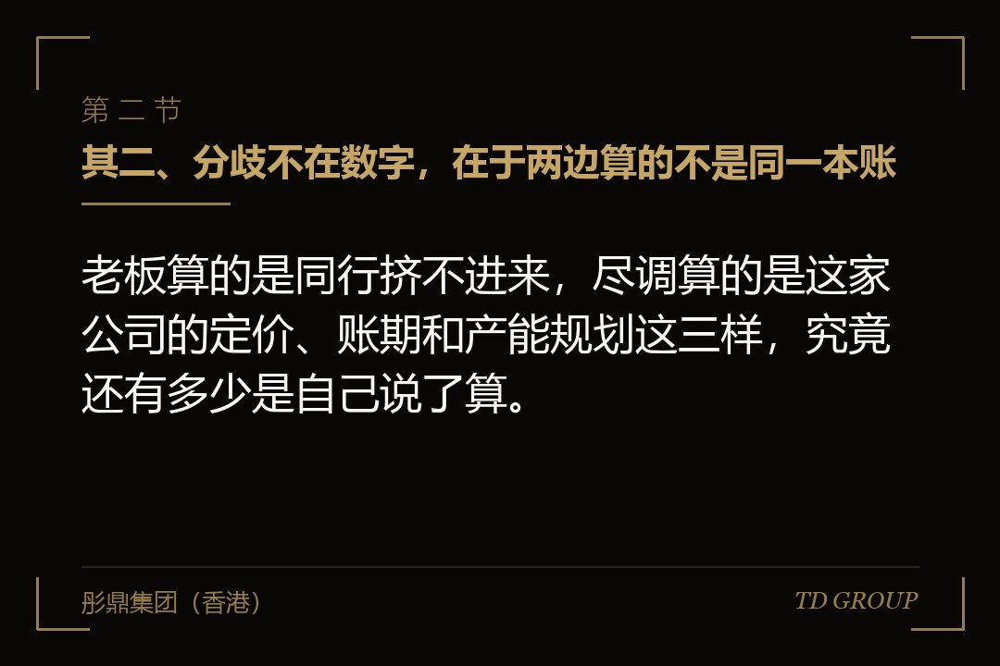
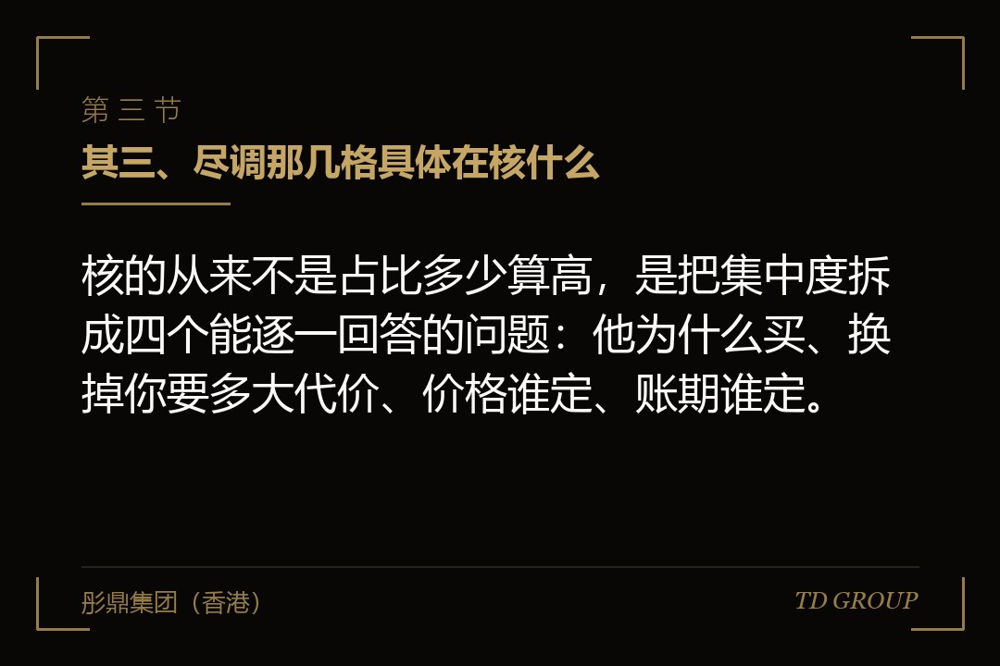

其一、他觉得这是护城河，对方问的却是另一件事

结论先行：七成收入来自一家客户，这句话在老板嘴里是一项优势，在尽调清单上却是一个必须用证据回答的问题。
有家做电池结构件的公司，去年做到两个多亿的收入，其中七成来自一家电芯厂。老板讲这件事的时候是有底气的：这条线是他跟着对方一起调了三年才调出来的，良率、节拍、包装方式全按对方的产线定，同行想挤进去，光验证就得走十八个月。
融资谈到尽调那一步，对方要的材料里有一份客户明细。老板让销售把表拉出来，占比一栏写着六成八。他心里还挺踏实，觉得这一栏正好说明自己的位置很稳。
回过来的问题不是「占比为什么这么高」。对方问的是：这家电芯厂今年的采购价是怎么定的，你们上一次调价是什么时候、是谁先提的；还有一句——如果明年他把订单分一半给别人，你这条线上的设备和人怎么办。老板当场只答上来一半。
这几个问题跟那个百分数没有一处直接相关，但它们问的是同一件事。老板算的是「同行挤不进来」，对方算的是「你出不去」。同一张表，两边读出来的方向正好相反。
其二、分歧不在数字，在于两边算的不是同一本账

结论先行：老板算的是同行挤不进来，尽调算的是这家公司的定价、账期和产能规划这三样，究竟还有多少是自己说了算。
打个比方就清楚了。一栋写字楼把整层租给一家公司，房东那边是省事的：一份合同、一个对接人、租金按时到账，走廊里也清净。这份省事一直成立，直到那家公司搬走——整层同时空掉，而重新找一个能整层租下来的租客，比找十个小租客慢得多，中间空着的那几个月一分租金也收不上来。
占比高的公司就是那位房东。平时的账面很好看，出问题的时候不是慢慢变差，是一次性掉一大截，而且掉的那一刻你没有缓冲。
失去主动权具体落在三处。价格上，每年一轮的降价谈判，你能守住多少取决于对方还有没有别的选择，而不是取决于你的成本；账期上，对方的付款节奏基本是通知你的，不是跟你商量的；产能规划上，你明年要不要再上一条线，得看他的排产计划，而那份计划他没有义务提前告诉你。
所以它的性质不是「有风险」——风险哪家公司都有——而是这家公司的几个关键变量，决定权落在公司外面，不在老板自己手里。
其三、尽调那几格具体在核什么

结论先行：核的从来不是占比多少算高，是把集中度拆成四个能逐一回答的问题：他为什么买、换掉你要多大代价、价格谁定、账期谁定。
头一个问题是他当初为什么买你的东西。答案落在哪儿，风险就落在哪儿。因为你的技术指标别人做不到，那是能拿去谈的；因为你便宜，那么便宜到什么程度、还能便宜多久就成了下一个问题；因为当年是某位熟人牵的线，而那位熟人早就调走了，这个答案撑不住任何追问。
接着问的是换掉你要付多大代价。这一格最怕只有说法没有证据。你说对方换供应商要重新验证十八个月，那就得拿得出这十八个月由什么构成：审厂、样品、小批、量产验证各占多久，谁签的字，有没有留下文件。拿得出来，这句话是资产；拿不出来，它只是老板的自我感觉。
再往下是价格由谁说了算。看的是过去三年调价的记录：每一次是谁先提的、幅度多少、你有没有还回去过、最后落在哪儿。一路都是对方提、你接受，那么毛利率这条线未来会怎么走，不需要谁来预测。
最后一格是账期由谁说了算。这一格不看合同上写的是多少天，看的是实际到账跟合同的差距，以及这个差距是从哪一年开始拉开的。差距一直存在且一直在扩大，说明这段关系里谁的话更管用，已经有答案了。
其四、两个最常见的自救动作，一个没用，一个是红线
结论先行：往分母里塞小客户，尽调一眼看穿；把同一个客户拆成几个主体开票，那不是降集中度，是把收入真实性一起搭进去。
头一个动作是加分母。有家做纺织助剂的公司，谈融资前的半年里新签了十几个小客户，最大那家的占比从七成做到五成出头，报表上确实降下来了。
问题出在这十几个新客户身上：单笔金额都很小，毛利率明显低于老客户，回款还慢，其中几家是同一位贸易商介绍来的，签了以后再没有第二单。这些特征凑在一起，对方只要把新增客户按签约时间排一遍就看出来了。分母是做大了，命还在那一家手里。
这个动作真正的代价不在于没用，在于它把话题从「你的客户结构」换成了「你为什么要这么做」。一旦对方开始想后面这个问题，前面已经核过的每一个数字，他都会回头再看一眼。
另一个动作要严重得多：把同一个客户拆成几个采购主体分别开票，让每一家在明细表上都不超过某个数。这条不是技巧问题，是红线，必须说清楚。
它经不起最基本的核对。集团客户的关联关系公开可查，几家主体共用一个收货地址、一个对接人、一套结算流程，这些痕迹在合同、送货单和银行流水里都留着。核出来之后被质疑的不是集中度这一格，是整套收入数字还能不能信——收入真实性一旦被打上问号，前面所有核过的项目都要重来一遍，这一轮基本也就到这儿了。
退一步说，就算这次没被核出来，这件事也会跟着这家公司一直往下走：往后申报时，同一套账要在更细的口径下再看一遍，那时候要么继续圆，要么自己翻出来解释。
其五、真正能降下来的三条线，以及为什么必须早几年动手
结论先行：客户结构只能沿产品、渠道、区域这三条线慢慢换，每一条都以年计，所以它是提前几年做的事，不是融资前突击做的事。
产品那条线，是把现在这一家买走的东西，改造成另一批客户也用得上的东西。它最慢，因为要重新做验证、重新报价、重新建服务能力，两到三年是常见的节奏；好处是一旦走通，新客户的黏性跟老客户是同一个量级。
渠道那条线，是换一种把东西卖出去的方式：从只做直供，变成同时做代理、做经销、做配套厂的二级供应。它比产品线快，一年上下能看到变化，但对价格体系有冲击，得先把价格政策理顺，否则老客户会拿新渠道的价格回头来找你。
区域那条线通常最快，尤其是往外走。同样的东西换一个市场，验证周期短、竞争格局也不一样，半年到一年就可能出头一笔订单。它的代价是钱要先花出去——人、认证、售后网络，这些都发生在收入之前。
先动哪一条，看你现在缺的是什么：缺时间的先走区域，缺毛利的先走产品，缺规模的先走渠道。三条一起上的结果通常是三条都没走通，因为它们抢的是同一批人和同一笔钱。
有家做减速机的公司提前四年动的手。那时候没人问它集中度，最大的客户占到六成五，日子过得挺舒服。它做的事很朴素：拿一条现成的产品线去改型号，配一个只跑新行业的销售小组，头两年新行业的收入不到一成，第三年到两成出头，第四年那家老客户的占比自然落到四成以下。
要紧的是它没有丢掉那家老客户，那家的销售额一直在涨，只是分母变大了。这跟前面那个塞小客户的做法看着都是分母变大，实质完全不同：一个是新增了真实的、能持续的收入，另一个只是把表做平。
为什么必须早几年动手，答案就在上面这些数字里——每一条线都要用年来计。等到中介进场、清单发过来才开始动，剩下的时间只够做出表面的变化，而表面的变化恰恰是最容易被看穿的那一种。
其六、短期降不下来的公司，怎么把它讲成一个能被接受的风险
结论先行：集中度短期降不下来，不等于这一关过不去，关键是拿证据说话：合同怎么写、切换成本有多少、这家客户自己稳不稳。
有家做钣金件的公司，八成收入来自一家做商用设备的厂商，短期内没有任何办法把这个数降下去。它最后是这么过去的：把说法全部换成了文件。
合同那一格，它拿出来的是一份三年期的框架协议，里面有年度最低采购量、有价格调整的触发条件、有提前终止要提前多久通知。这三条决定了对方就算要走，也不是一句话的事，而是一个有时间表、有代价的过程。
切换成本那一格，它拿出来的是对方产线上的图纸编号和工装清单——这些工装是按它的工艺做的，换供应商要重开。另外还有一份双方共同署名的技术变更记录，从三年前一直排到今年。这些东西比任何形容词都管用。
客户自身那一格常被忽略：你这家大客户自己稳不稳，等于你的一半风险。他的公开经营情况、这几年的产能变化、有没有在建新厂、付款有没有出现过延迟，这些都能查，也该主动摆出来。你不摆，对方也会去查，那时候查到的东西你就没机会解释了。
毛利结构那一格是反过来用的。如果这家大客户的毛利率明显低于其他客户，说明你在他面前没有议价能力，这是坏消息；如果差不多甚至更高，说明这单生意是凭本事拿的，不是靠让价换来的——同样一个高占比，这两种情况完全不是一回事。华尔街彤鼎俱乐部的一次交流里，有位做产业投资的把这件事说得更直白，他说他看客户集中度只看两栏，占比那一栏扫一眼就过，毛利那一栏他要看很久。
这几格摆齐之后，风险还在，但它变成了一个说得清楚、算得出来的风险。真正让人退回去的从来不是风险本身，是看不清楚的风险。
其七、还有两格更容易漏掉：供应商和回款
结论先行：客户那一格盯得紧，另外两格常常没人看：一样关键的东西只有一家供得了，以及所有的钱都从同一个来源下来。
供应商这一格的性质，跟客户那一格是对称的。有家做建筑陶瓷的公司，产品卖得很分散，客户名单上百家，看着漂亮；但它有一种关键色料常年只有一家能供，那家在另一个省，一年调一次价，调完通知它。这条线一断，它的整条高毛利产品线当月就得停。
这一格的核查方式跟客户那一格一样：这个供应商为什么是他、换一家要多久、价格谁说了算、有没有备选而且备选有没有真的试过样。「有备选」和「试过样」是两件事，很多公司答的是前者，被问的是后者，中间那段差距通常要用几个月才补得回来。
回款这一格更隐蔽，因为它常常被算进客户那一格里，其实是另一个问题。有家做环卫设备的公司，客户名单上有二十几个县市，看上去分散得很；但这些钱最后都从同一个渠道下来——同一类预算科目、同一个审批口径、同一轮拨付节奏。上面那个节奏一变，二十几个客户会在同一个月一起变慢。
所以这一格要问的不是「你有几个客户」，而是「你的钱有几个来源」。名单上的分散，不等于钱的来源分散。判断方法很简单：把过去三年的进账按最终付款方归一次类，而不是按合同上的甲方归，归完再看那张表。
其八、今天下午自己就能拉出来的一张表
结论先行：这张表不用请外人，也不用等谁来问：把过去三年的收入按客户、按供应商、按最终付款方各归一次类，答不上来的那几格就是要补的。
要拉的东西不多。过去三年，最大的那家客户各占多少，排在前面的五家合计占多少；这三年里这两个数是往上走还是往下走；最大那家客户的毛利率跟其他客户比是高是低；跟他签的是零散订单还是有期限的框架协议，协议里有没有最低采购量和提前通知期。
再往下几题：他上一次调价是谁先提的；如果他明年把订单砍一半，你手上有多少设备、多少人是专门为他配的；关键原材料或者部件里，有没有哪一样只有一家供得了，备选试过样没有；把三年的进账按最终付款方归类之后，最大的那个来源占多少。
这些题的价值不在于填满，在于填的过程中会当场知道自己缺什么。答得上来的公司，尽调这一格会轻松很多；答不上来的公司也不吃亏，因为现在知道，手上还有几年时间可以动手，等清单发过来才知道，能动的就只剩解释了。
回到开头那家做电池结构件的公司。七成收入来自一家电芯厂，这件事本身既不是护城河也不是命门，它只是一个还没有被回答的问题。老板把它当成结论，所以答不上后面那几句；对方把它当成入口，所以一路往下问。本质上，这一格考的不是你的客户结构够不够分散，而是你对自己这门生意的了解，比坐在对面的人深多少。